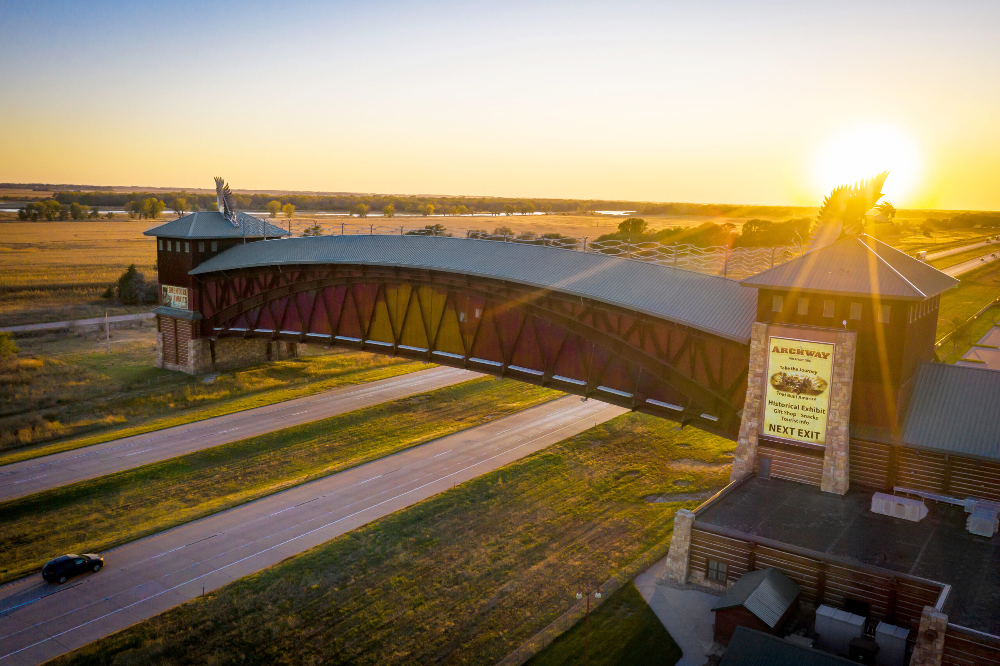
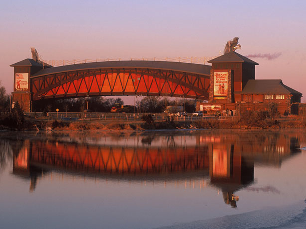
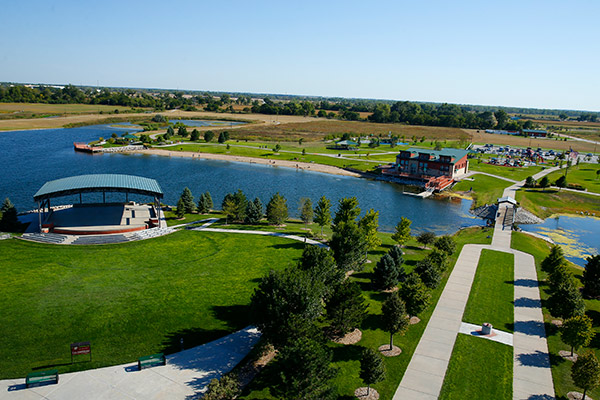
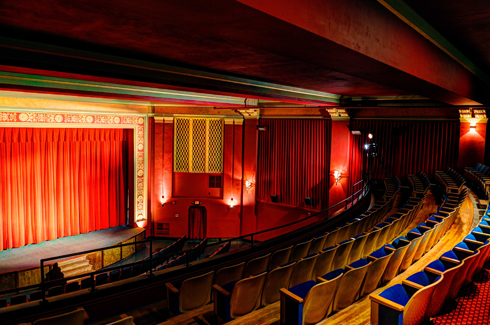

Welcome to Kearney
Best Tourist Attractions

The Archway - a great experience for those who would love to learn more about the history of the Oregon Trail and who all crossed through Kearney. More information here

Yanney Park - a great place for an all day outing with trails, gardens, the lake, playgrounds and splash pads. More information here

The World Theatre - a unique way of going to see a movie. Featuring live stage events while watching your favorite movies. More information here